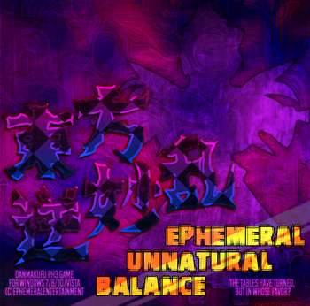

- Welcome to Touhou Wiki!
- Please register to edit. For assistance, check in with our Discord server or IRC channel.
Ephemeral Unnatural Balance
Ephemeral Unnatural Balance | |
|---|---|
|
 | |
| Developer | |
| Publisher | |
| Released |
Prototype v0.11: 2014 (Bulletforge) |
| Genre |
Vertical Danmaku Shooting Game |
| Gameplay |
Single-Player Story Mode |
| Platforms | |
| Requirements |
Direct3D, DirectX 8.1, Except the video cards which max texture size is only 256x256 (e.g. Voodoo) (Danmakufu) |
| Official Site | |
Touhou
The game features 6 stages with 4 difficulty levels and an Extra Stage with 2 difficulty levels.
Gameplay[edit]
The gameplay mainly revolves around collecting Balance items to fill a gauge. The gauge has a few effects, such as lowering the Point of Collection line and adding score bonuses for point items but its main use is to activate Discord. Similar to Trance from Ten Desires, Discord drains the meter while it's active and causes a variety of effects including increased player shot power, harder enemy bullet patterns, and automatic bombing when hit. Discord can be activated so long as the gauge is above a certain value and unlike Trance it can be deactivated at will and does not make the player invincible. Scoring is multifaceted. To achieve a high score, you must juggle two opposing ideas: keeping the Balance gauge at a high level, and using Discord to increase the value of point items and Spellcard Bonuses.[2]
Concept[edit]
EUB was initially conceived as a game where minor midboss-only characters with no dialogue would be the focus. The plot, which involves a power reversal spell cast on the inhabitants of Gensokyo, was written to fit this theme. Despite similarities to Double Dealing Character, EUB's story was devised before the release of Double Dealing Character.[3]
The characters featured in EUB also appear in the opposite order within their respective stages. For example, Mononobe no Futo is the midboss to her accomplice, Soga no Tojiko. In the end, the game became a celebration of many obscure characters from the Touhou Project series. All player characters (except Kasen) have never had so much as a single appearance in an official game, and thus were considered perfect opposites to series regulars like Reimu Hakurei and Marisa Kirisame. Kasen's inclusion as a player character when she is nowhere near as obscure as Rin was reflective of the time when the game was first planned, 2012. At the time, Kasen had appeared in no official games and was mainly featured in only Wild and Horned Hermit.[3]
Story[edit]
A mysterious spell has descended upon Gensokyo. The result is a devastating reversal of power between the strongest and weakest and everyone in between. Bedridden or otherwise incapacitated, the usual incident solvers are unavailable this time. Thus, they are forced to turn to a new set of heroines. Among these are the forgotten Kirin, Rin Satsuki and the wild hermit, Kasen Ibaraki.[2]
Music[edit]
EUB mostly features arrangements of songs originally appearing in official Touhou titles. However, a substantial portion of the soundtrack originates from more unusual sources, including unused Touhou tracks, Touhou fan-themes, or completely original compositions. Most of the music was produced by ExPorygon, but there are a few tracks contributed by Spectral Nexus, Spaztique, Kappatalist, and Popfan.
To go with the game's concept, there was an emphasis on using obscure (usually PC-98) sources for arrangements. Among these are arrangements of obscure tracks such as Angel's Legend, Extra Love, Magic Shop of Raspberry, 過去の花 ～ Fairy of Flower, and even Sacred Battle originally from Torte Le Magic. The Sacred Battle arrangement was ultimately cut, but remains in the game as an unused track.[citation needed]
External Links[edit]
References[edit]
- ↑ ExPorygon (11 November 2018). "Twitter". Retrieved 11 November 2018.
- ↑ 2.0 2.1 ExPorygon (18 April 2018). "東方逆妙乱 ～ Ephemeral Unnatural Balance". Retrieved 11 November 2018.
- ↑ 3.0 3.1 ExPorygon (11 November 2018). "EUB Devlog - Introduction". Retrieved 11 November 2018.